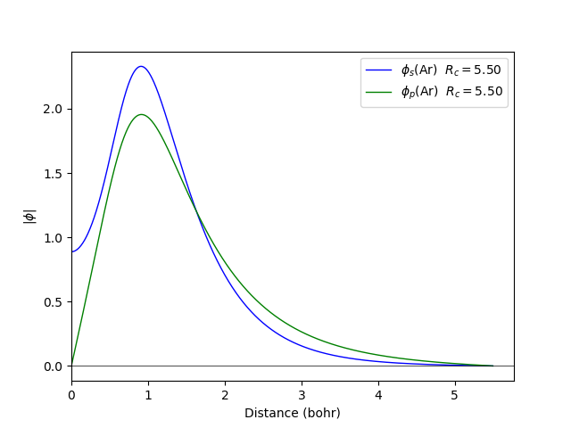

Quamtum espresso

Functional : GGA X Becke C Lee/Yang/Parr
Projection : Löwdin
Calculation the band dispersion for the fcc structure with the lattice constant of 4.5 Å| |
Quamtum espresso |
|---|
The cut off radio of the orbitals in Fireball are rs = 5.5 (bohr), rp = 5.5 (bohr), and was generate like qs = 2.0, qp = 6.0, .
The LDA calculation is done with the ncpp file to obtain 018.pp pseudopotential :
 |
 |
|---|
The GGA calculation is done with the ncpp file to obtain 018.pp pseudopotential :
 |
 |
|---|